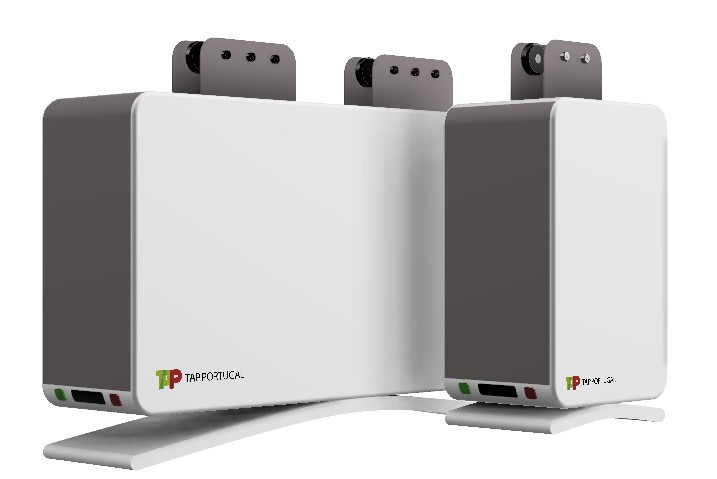
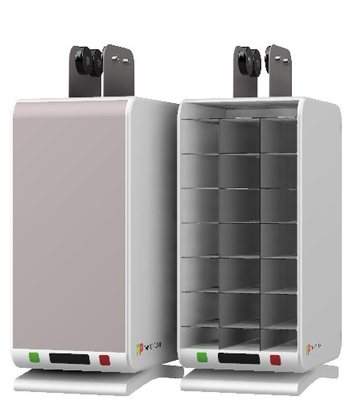
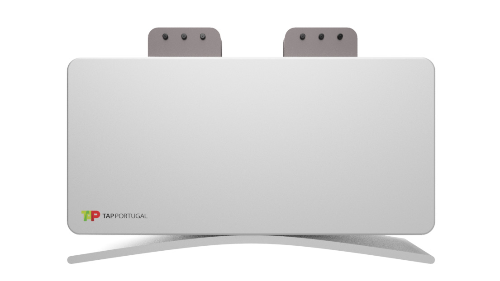
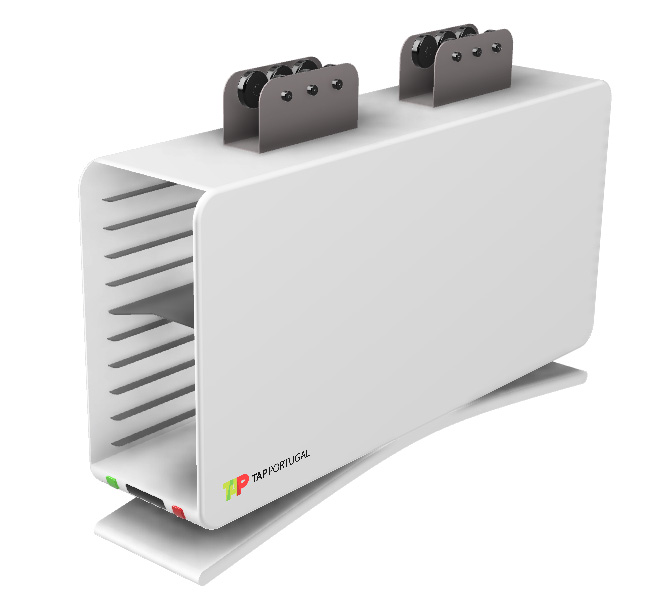
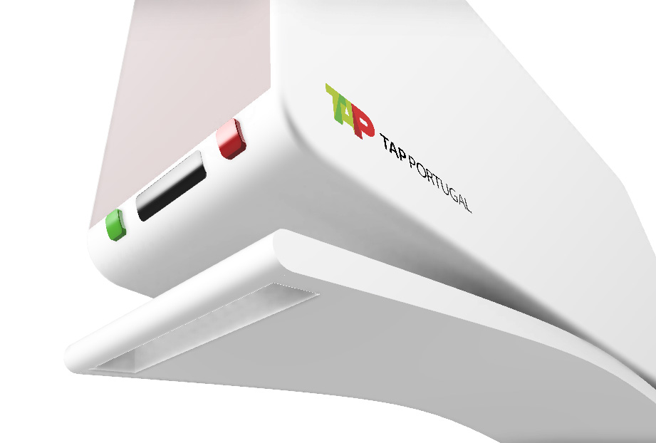
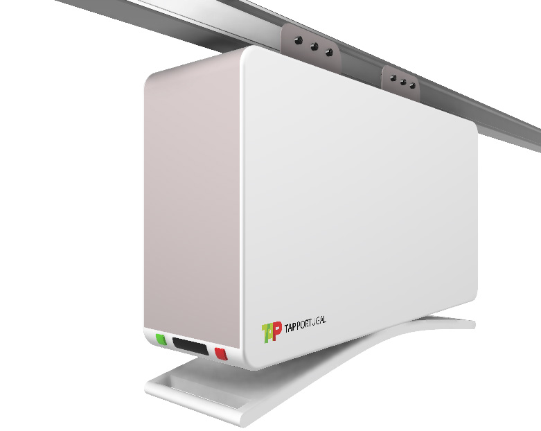
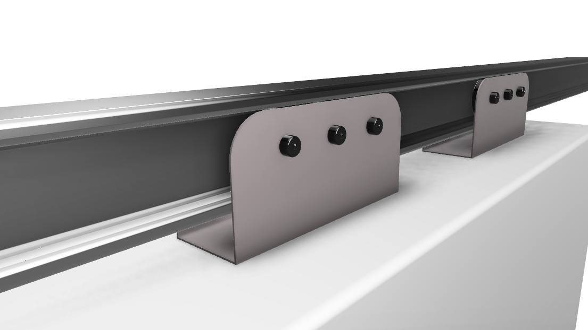

Design de Produto
2018
Daniela Fragoso
Joana Norte
João Vasconcelos
No seguimento da proposta que nos foi feita – solucionar vários problemas que os trolleys atuais apresentam – optámos por criar dois trolleys que, através de um sistema de rodas que assentam num rail, ficam suspensos no ar, navegando no teto do avião.
A suspensão dos trolleys permite uma mobilidade mais fácil e acessível, o que faz com que este não embata com nenhum obstáculo no avião nem com nenhum passageiro. Permite também um manuseamento mais simples com finalidade de facilitar o serviço das hospedeiras que não terão de se baixar continuadamente para tirar os tabuleiros.
De forma a ficarem suspensos no teto do avião, são equipados com dois segmentos de roldanas constituídos por seis rodas cada, situados no topo central do trolley para que o seu peso seja distribuído igualmente. As rodas encaixam num rail que permite o trolley deslizar ao longo do avião.
Ambos possuem um conjunto de botões e um leitor de cartões que controlam tanto a porta automática como os travões das rodas. O leitor de cartões encontra-se perto da pega, na parte de baixo do trolley, e tem como função restringir o uso do trolley apenas a tripulantes que contenham o respetivo cartão de desbloqueio. É também utilizado para tornar o processo de etiquetagem feito no final do percurso do avião mais fácil e rápido.
      